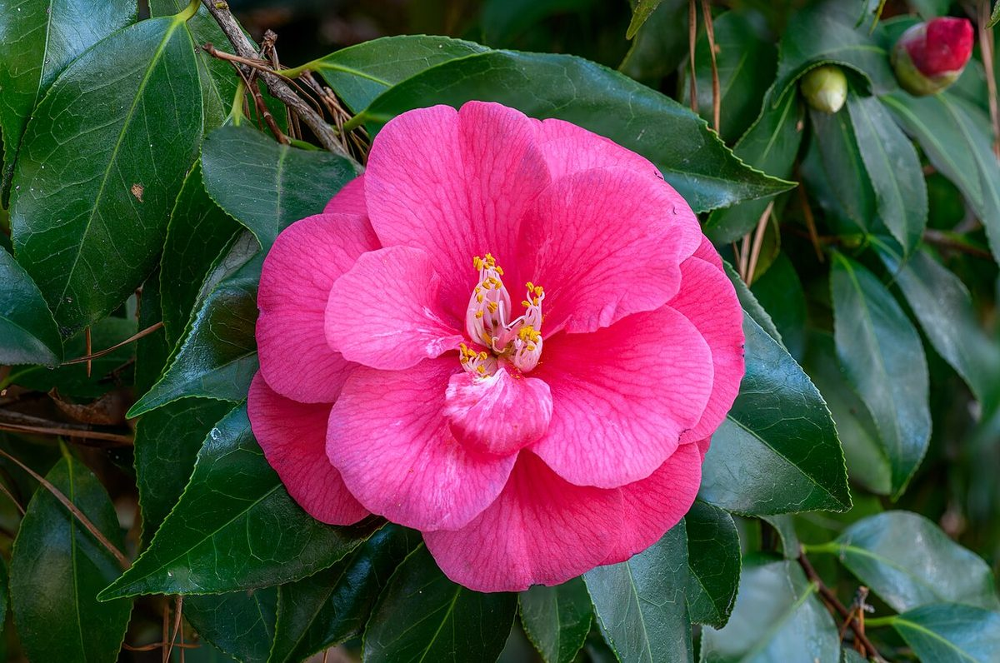
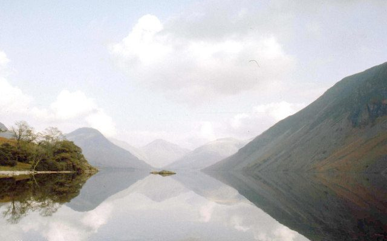

話しているうちに、肩の力が抜けていくのが分かりました。気になっていることを落ち着いて伝えられて、帰るころには気持ちも軽くなっていました。
口コミ
このページの内容は制作側が作成したイメージ例であり、実際のお客様の声ではありません。

仕上がった髪を鏡で見たとき、思わず小さく笑ってしまいました。朝の支度が少し楽しみになりそうです。

忙しい毎日のなかで、ゆっくり過ごせた時間でした。また髪を整えたくなったら、ここに来たいなと思いました。
Instagramもご覧ください。
Instagram(@cc_kamiya)を開く
ご予約・ご相談はお電話で
営業時間はお問い合わせください。Instagramからもご覧いただけます。